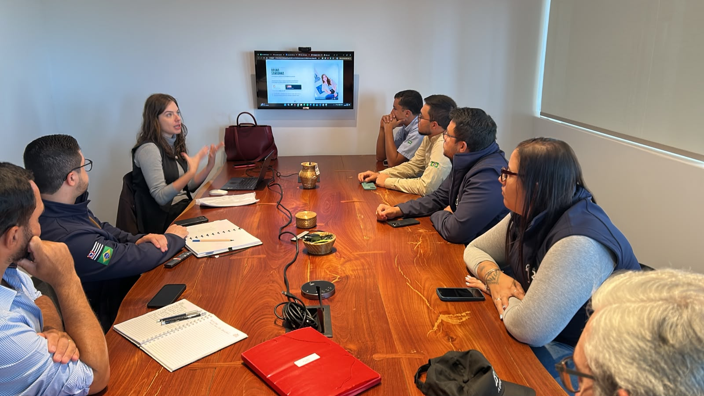
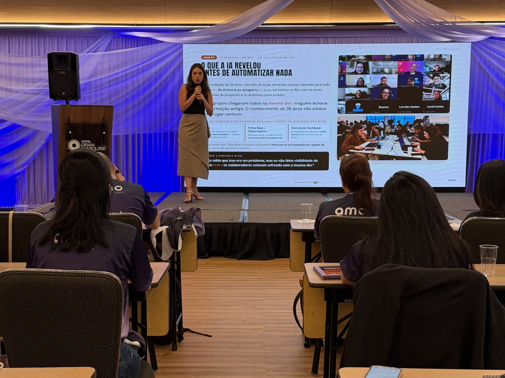
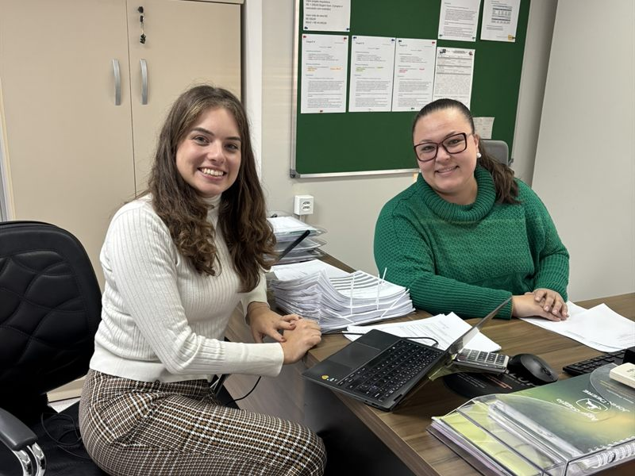
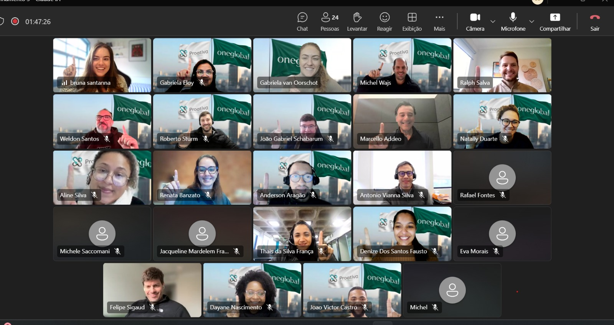

JB Agro · Morro Agudo
Sentando com cada área da fazenda, área por área. Foi de lá que veio a indicação de vocês.
Imersão presencial no escritório de vocês, em Morro Agudo. Uma abertura curta para todos entenderem como a IA pensa, e o resto dos dois dias mão na massa, frente por frente.
O Claude Pro já está assinado e a operação já roda com 300 clientes em três estados. O que falta é cada pessoa saber onde ele entra no seu trabalho: o da sua mãe no financeiro não é o das meninas na montagem, que não é o seu e do seu pai na parte técnica.
A parte expositiva é curta de propósito. O grosso dos dois dias é construindo, com os documentos de vocês abertos.
A única parte expositiva. Não é aula de ferramenta: é entender o raciocínio da IA, porque quem entende isso automatiza qualquer processo depois.
Sento com cada frente — você e seu pai na técnica, as duas secretárias juntas nos documentos, sua mãe no financeiro — e a gente trabalha em cima da rotina real.
Se eu só entregasse as automações prontas, vocês voltariam a me chamar no processo seguinte. Entendendo o fluxo de pensamento da IA, o time olha para qualquer tarefa da empresa — inclusive as que ainda nem existem — e sabe mapear, decidir se cabe IA e construir sozinho.
Nada aqui é slide de aula. É o que existe no computador de vocês no fim do dia 2 — e o que continua existindo depois.
As automações construídas por cada frente, salvas no Claude e testadas com documento real.
Um por pessoa: os prompts e o passo a passo do que ela construiu, para repetir sem me chamar.
O Claude estruturado com os arquivos e o acervo de vocês, do jeito que ele encontra as coisas.
As três frentes destrinchadas no papel, com o que foi automatizado e o que ficou para depois.
Acesso incluso para o time: mais de 6 horas de conteúdo gravado e detalhado, para rever no ritmo de cada um e destravar o que não coube nos dois dias.
Sem prazo de validade. É onde a dúvida do mês que vem — e a do ano que vem — continua tendo onde cair, direto comigo.
Faíscas, não escopo fechado. O que cada frente vai construir se decide na sessão dela, com o documento aberto.
O documento secundário que se monta a partir dos principais, com o Claude puxando o que interessa do acervo de cinco anos em vez de você abrir arquivo por arquivo.
Sai fazendo: documento montado, revisão só no fimO e-mail que chega passa pelo Claude antes: ele lê, aponta o que falta e devolve o checklist preenchido. A montagem começa pela montagem, não pela conferência.
Sai fazendo: triagem de entrada sem leitura linha a linhaOrçamento, nota e cobrança têm muito transporte de informação entre planilha e documento. É o tipo de tarefa que o Claude encurta, construída no computador dela.
Sai fazendo: menos digitação entre planilha e documentoNenhuma dessas ideias é obrigatória. O valor está em cada um aprender a enxergar as próprias.
Montar um documento secundário puxando informação de documentos de até cinco anos atrás.
Abrir o acervo, achar os antigos daquele cliente, ler para localizar a informação, transportar para a planilha, montar e passar o pente fino. Em documento longo, se estende por mais de um dia.
Você aponta o cliente e o documento. O Claude localiza no acervo, extrai e devolve montado. A conferência técnica continua de vocês, mas deixa de começar do zero.
Exemplo ilustrativo, do que você contou na conversa. Os tempos reais a gente mede na imersão, com o seu documento na tela.
A primeira foto você conhece: é a JB Agro, do Caio e da Sofia. Foi lá, sentando com cada área, que montamos as automações que puxam informação dos documentos — o mesmo formato desta proposta, na mesma cidade.

Sentando com cada área da fazenda, área por área. Foi de lá que veio a indicação de vocês.

A Virada IA para o time inteiro, da diretoria a quem opera o balcão.

Empresa familiar: o fluxo de caixa que levava 2 dias passou a sair em minutos.

Imersão de IA com Claude para os 70 colaboradores do Ismart.

Formação Claude com profundidade para 40 líderes, em 3 encontros.

Mais de 280 pessoas: a IA que multiplica o que o time já sabe fazer.
Um depoimento de quem passou pela formação e viu o dia a dia mudar. Dá o play.
Valor fechado pelos dois dias, com as cinco pessoas incluídas. Não existe mensalidade.
As assinaturas do Claude vocês contratam direto, também à parte. Na imersão eu oriento qual plano faz sentido para o tamanho do time e para o sigilo dos dados de vocês.
Não é dar a aula e ir embora. Os dois dias são mão na massa para que cada pessoa repita sozinha — e o curso e o grupo permanente existem porque a dúvida real aparece depois, quando eu já não estou na sala.
Essa foi a sua preocupação principal, e é por ela que a proposta é presencial. Semana passada fiz exatamente isso num e-commerce de calçados com 40 anos de casa: os dois donos são senhores, a dona cuida do financeiro, e ela pegou muito bem — construímos junto, no computador dela. Na sala eu ajusto o ritmo a cada pessoa, e sua mãe e seu pai têm sessões próprias, no tempo deles.
Não. Os documentos principais continuam no sistema de vocês, que funciona. O Claude entra por cima: nos cerca de 40 secundários, na consulta ao acervo e na conferência.
Dão, pelo agrupamento: as duas secretárias fazem a mesma frente, você e seu pai compartilham a técnica, sua mãe tem a dela. Tirando a hora ou duas de abertura, os dois dias inteiros são prática. O objetivo é cada pessoa sair com solução rodando, não esgotar todos os usos do Claude.
Vocês lidam com informação sensível de saúde ocupacional, então isso entra logo na abertura, não como rodapé. Vemos o que pode e o que não deve ir para a ferramenta, qual plano do Claude protege os dados de quem contrata, e como montar o processo para o sigilo dos ~300 clientes não depender da memória de ninguém.
Não. A Bruna é empresária que implementa IA no próprio negócio todos os dias, fala a língua da operação de vocês, não a do TI.
ESPM + MBA USP. Empresária há 10+ anos, teve loja e e-commerce por 8 anos. Mentora de IA no Potenc.IA (Magalu, OLX). Implementa IA no próprio negócio todos os dias.
ESPM. 17+ anos em Marketing e Produto. Ex-Warner Bros., ex-Natura & Co. Já implantou agentes de IA em redes com 700+ franquias.
"Cada projeto começa pela conversa, não pelo contrato. A gente entende como a operação funciona hoje, o que a equipe precisa, e só depois constrói. E depois que entrega, a gente fica, evoluindo junto com o seu negócio."
Você confirma e travamos as datas. 50% reserva a agenda.
As cinco respondem o nivelamento e separam os arquivos reais.
Abertura curta e o resto mão na massa. Cada frente sai com solução rodando.
Curso liberado e grupo no WhatsApp permanente, para não travar sozinho.
Ninguém do time fica sozinho na imersão, Renan — nem depois dela.
Vocês já têm a ferramenta e já têm o volume. Faltam os dois dias que fazem cada pessoa usar isso na própria rotina.